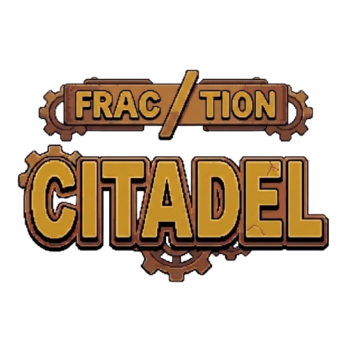

Sin logo — sube
logo.png
Fraction Citadel — Demo
Explora la demo de Fraction Citadel: exploración, combates matemáticos y desafíos divertidos. Controles: teclado / ratón. Hecho por: Marcus Pozo.
Descargar .zip